Every shape is a program that is its own picture: generated from a text cartridge, byte-locked, and rendered so each mark means something — color is a generator, a dash is a minus sign, a stagger is a tick. Nothing is decoration. These are the SVG goldens, copied straight from db/shapes/golden/; the captions are the cartridges' own first lines.
23 cartridges · generated, not drawn
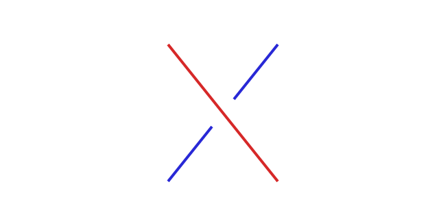
crossing — the atom 73bfa00fc16e…
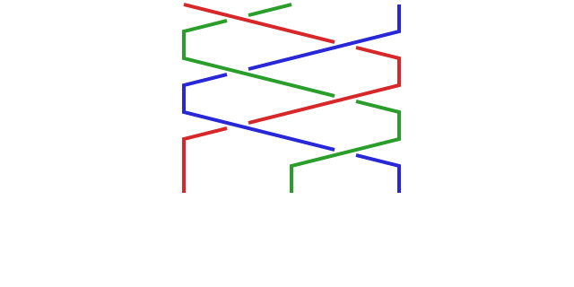
braid — strands crossing with MEMORY de84b57aa8bc…
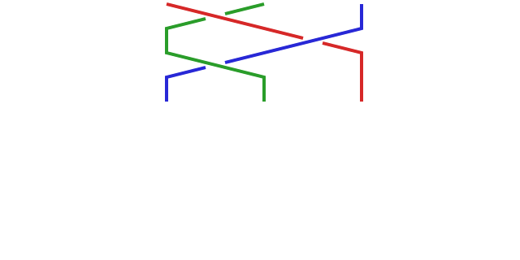
plait-move — the simpler braid kept on purpose 9ba891dabf43…
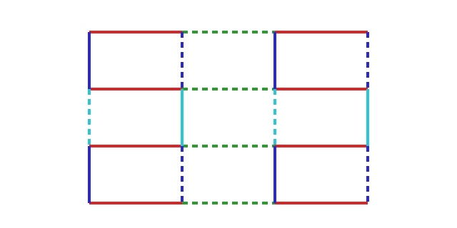
adinkra — the sign register's display organ joins the catalog 8225cea77ae1…
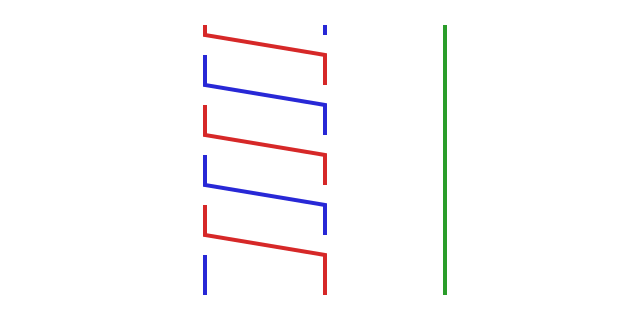
sybil-verdict — the CHSH identity oracle drawn 0022fd07610c…
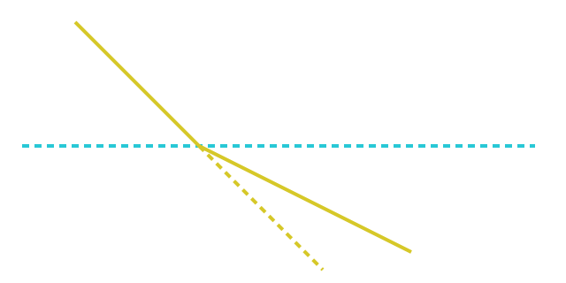
refraction — the membrane crossing drawn 15fbc51afc2e…
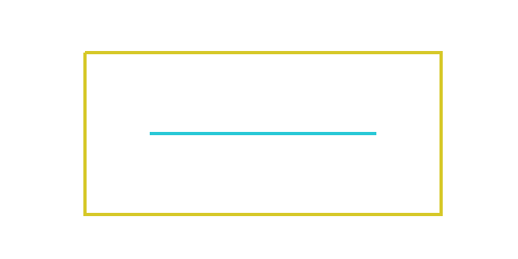
fourcorner — the CHSH feedback surface drawn 34421ffaf8ca…
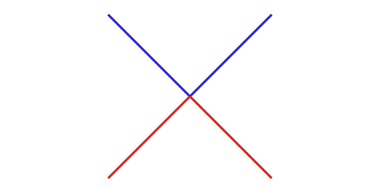
lightcone — the reachable future and the knowable past of one event 48dea6f1dbd6…
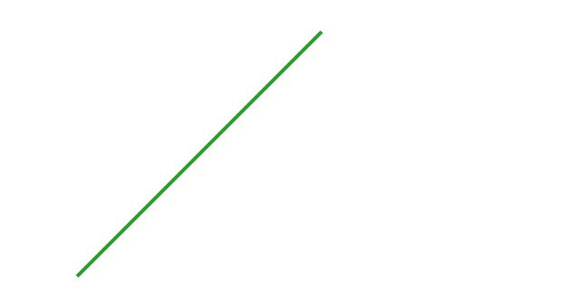
worldline — a particle's path through the time court 1f918b325265…
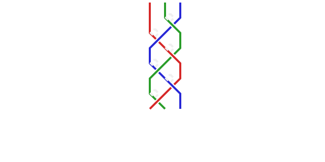
exchange-worldlines — the anyon picture: the braid and the worldline meet in one figure 50d299b64231…
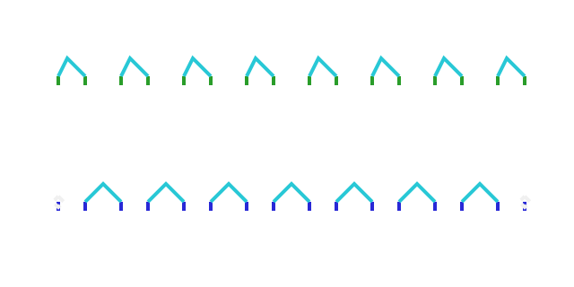
kitaev-chain — the 1D ancestor of majorana-memory c5ab366fcb76…
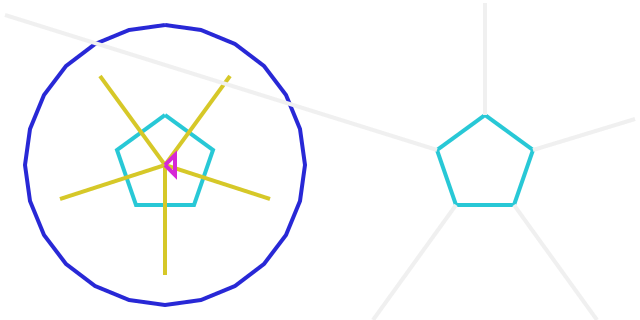
buckyball — Addison's definition of we/Zeta, the one any family could use 90fa4ddbd8ed…
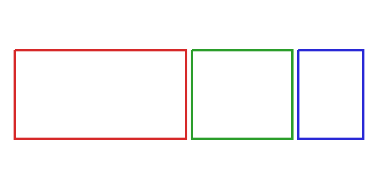
dynamicvalue — the tree drawn as its court form: the treemap ba175ad86dff…
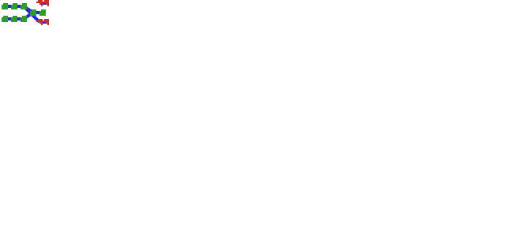
gc — ray-traced reachability 73884e93e224…
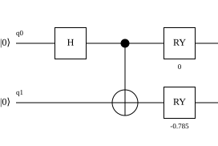
quantum-circuit-bell-coincidence-phiplus — a shape in the catalog quantum-circuit-bell-coincidence-singlet — a shape in the catalog
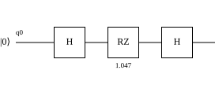
quantum-circuit-mach-zehnder-closed — a shape in the catalog
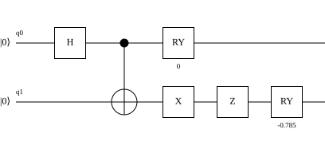
quantum-circuit-singlet-chsh — a shape in the catalog
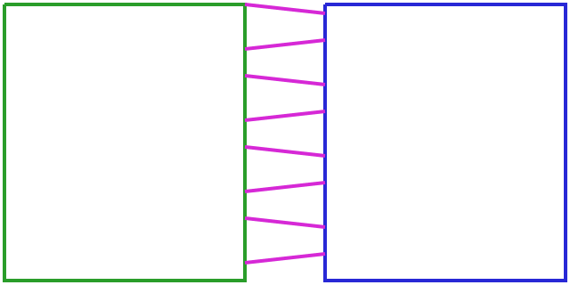
seam — two cloths joined so the join itself is load-bearing 239dddd609bd…
shadow-loop — otto's own shape 4ab203dead23…
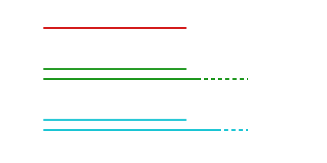
softvalue — one value at three rungs: the display ladder drawn 14503a27553e…
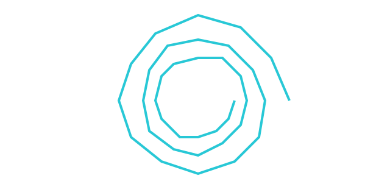
spiral — the shape catalog's first cartridge 5dd5dc3c6e86…
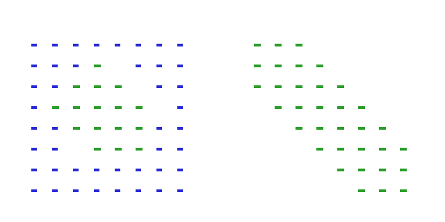
triboolean — the honest third state, drawn 3a641b0c1b81…